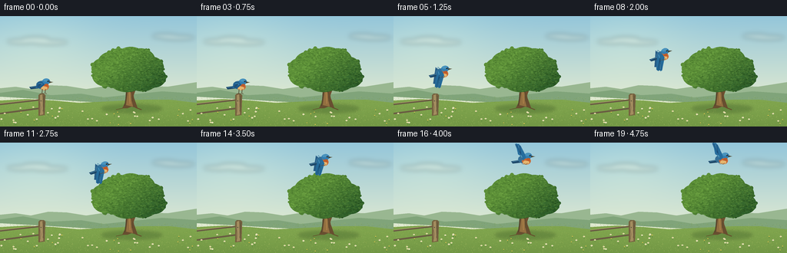
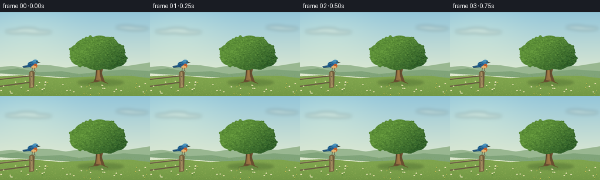
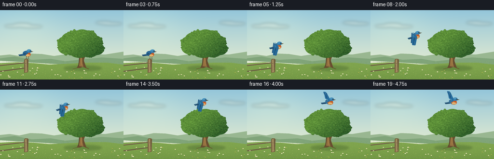

CODING AGENTS AS PIXEL WORLD MODELS
traex/GPT-6.1-Sol · dynamic_spatial_relationship_0048
点击播放 · 原生 RGB 像素
逐轮保存的候选
回放视频、检查图与代码变化。
每份候选均可单独播放。实际图片检查记录在下方工具轨迹中。
候选 01播放与检查图
点击播放 · 原生 RGB 像素


展开代码变化
--- 上一保存版本
+++ 本次保存版本
@@ -0,0 +1,199 @@
+from pathlib import Path
+import math
+import numpy as np
+from PIL import Image, ImageDraw, ImageFilter
+import artifact_io
+
+ROOT=Path(__file__).resolve().parent
+W,H=256,144
+S=4
+rng=np.random.default_rng(9048)
+
+def poly(d, pts, fill):
+ d.polygon([(round(x*S),round(y*S)) for x,y in pts],fill=fill)
+def line(d, pts, fill, width=1):
+ d.line([(round(x*S),round(y*S)) for x,y in pts],fill=fill,width=max(1,round(width*S)),joint='curve')
+def ellipse(d, box, fill):
+ d.ellipse(tuple(round(v*S) for v in box),fill=fill)
+
+# Locked camera, warm daylight, with distant hills and a meadow.
+y,x=np.mgrid[0:H*S,0:W*S].astype(float)
+t=y/(H*S)
+upper=np.array([148,198,218.]); lower=np.array([233,238,208.])
+a=np.clip(t/.85,0,1)[...,None]
+arr=upper[None,None,:]*(1-a)+lower[None,None,:]*a
+sun=np.exp(-((x-50*S)**2/(78*S)**2+(y-28*S)**2/(51*S)**2))
+arr+=sun[...,None]*np.array([15,11,3])
+base=Image.fromarray(np.uint8(np.clip(arr,0,255)),'RGB')
+cloud=Image.new('RGBA',base.size); cd=ImageDraw.Draw(cloud)
+for cx,cy,sz in [(29,33,20),(46,30,18),(64,34,24),(215,26,17),(231,28,22)]:
+ ellipse(cd,(cx-sz,cy-3,cx+sz,cy+3),(255,252,229,65))
+base=Image.alpha_composite(base.convert('RGBA'),cloud.filter(ImageFilter.GaussianBlur(3*S)))
+d=ImageDraw.Draw(base)
+poly(d,[(0,101),(0,94),(20,92),(40,95),(63,90),(87,91),(112,95),(139,91),(165,95),(193,91),(218,92),(256,86),(256,112)],(153,183,145))
+poly(d,[(0,105),(0,100),(30,96),(66,103),(105,101),(135,106),(172,102),(211,98),(256,101),(256,120)],(128,164,122))
+poly(d,[(0,110),(35,108),(70,110),(102,113),(143,111),(183,109),(222,109),(256,113),(256,144),(0,144)],(128,165,78))
+# Graded foreground, subtle horizontal light in the grass.
+over=Image.new('RGBA',base.size); od=ImageDraw.Draw(over)
+for yy in range(109*S,H*S):
+ f=(yy/S-109)/35
+ od.line((0,yy,W*S,yy),fill=(int(105-25*f),int(144-26*f),int(58-11*f),int(80*f)))
+base=Image.alpha_composite(base,over)
+d=ImageDraw.Draw(base)
+# Meadow texture is fixed between frames.
+for _ in range(1850):
+ gx=float(rng.uniform(0,256)); gy=float(rng.uniform(105,144))
+ size=.13+(gy-105)/39*float(rng.uniform(.3,1.4))
+ col=[(147,179,85),(174,190,103),(107,143,60),(117,151,64)][rng.integers(4)]
+ line(d,[(gx,gy),(gx+float(rng.uniform(-.8,.8)),gy-size)],col,.25)
+# Soft shadow underneath the main tree.
+shade=Image.new('RGBA',base.size); sd=ImageDraw.Draw(shade)
+ellipse(sd,(132,115,211,126),(38,68,28,65))
+ellipse(sd,(151,115,194,122),(34,64,28,65))
+base=Image.alpha_composite(base,shade.filter(ImageFilter.GaussianBlur(2*S)))
+d=ImageDraw.Draw(base)
+# Substantial trunk, visible forks, bark and roots.
+poly(d,[(159,120),(163,112),(164,94),(162,82),(157,75),(158,70),(167,81),(171,66),(174,65),(172,87),(174,106),(179,120),(171,118),(166,120)],(104,78,48))
+poly(d,[(164,116),(167,93),(165,80),(168,81),(170,67),(172,67),(170,88),(171,110),(173,118)],(147,111,64))
+poly(d,[(166,95),(149,79),(140,70),(142,68),(158,80),(169,88)],(108,80,47))
+poly(d,[(170,99),(177,85),(191,75),(193,71),(195,73),(190,80),(179,89),(173,105)],(109,79,47))
+line(d,[(162,117),(165,97),(164,87)],(76,64,43),.7)
+line(d,[(169,114),(168,96)],(182,139,78),.65)
+line(d,[(172,111),(171,99),(176,86)],(78,64,41),.55)
+line(d,[(160,120),(151,122)],(100,81,46),1.1)
+line(d,[(176,119),(184,122)],(101,79,44),1.3)
+# Rounded but organic foliage: coherent shaded masses and thousands of fine leaves.
+clusters=[(139,78,19,14),(133,68,14,13),(146,61,19,15),(155,52,16,10),(170,51,17,11),(183,58,19,16),(198,67,15,14),(200,80,16,13),(185,85,19,13),(165,84,23,15),(151,77,21,17),(169,66,25,21)]
+mask=Image.new('L',base.size); md=ImageDraw.Draw(mask)
+for cx,cy,rx,ry in clusters: ellipse(md,(cx-rx,cy-ry,cx+rx,cy+ry),255)
+# Disturb the outline with leaf lobes, not an artificial ellipse boundary.
+for _ in range(180):
+ cx,cy,rx,ry=clusters[int(rng.integers(len(clusters)))]
+ angle=float(rng.uniform(0,2*math.pi)); r=float(rng.uniform(.75,1.02))
+ xx=cx+rx*r*math.cos(angle); yy=cy+ry*r*math.sin(angle)
+ rr=float(rng.uniform(1.1,2.7)); ellipse(md,(xx-rr,yy-rr,xx+rr,yy+rr),255)
+Y,X=np.mgrid[0:H*S,0:W*S]
+light=np.clip(.62+(170*S-X)/(100*S)+(75*S-Y)/(80*S),0,1)
+noise=rng.normal(0,1.5,(H*S,W*S))
+fol=np.zeros((H*S,W*S,4),np.uint8)
+for k,(dark,lit) in enumerate([(40,92),(89,143),(42,55)]):
+ fol[:,:,k]=np.clip(dark+(lit-dark)*light+noise,0,255)
+fol[:,:,3]=np.array(mask)
+foliage=Image.fromarray(fol,'RGBA'); fd=ImageDraw.Draw(foliage)
+# Layered sprays, with lighter leaf facets toward the sunny upper left.
+for _ in range(3400):
+ xx=float(rng.uniform(114,218)); yy=float(rng.uniform(40,100))
+ ix=min(W*S-1,int(xx*S)); iy=min(H*S-1,int(yy*S))
+ if mask.getpixel((ix,iy))==0: continue
+ ll=float(light[iy,ix]); variation=float(rng.uniform(-19,23))
+ col=(int(np.clip(44+48*ll+variation*.85,20,145)),int(np.clip(89+54*ll+variation,57,183)),int(np.clip(37+19*ll+variation*.5,25,95)),255)
+ size=float(rng.uniform(.38,1.55)); tilt=float(rng.uniform(-.5,.5))
+ ellipse(fd,(xx-size,yy-size*.45+tilt,xx+size,yy+size*.45+tilt),col)
+# Keep the fine leaf texture within the leafy silhouette.
+foliage.putalpha(mask)
+base=Image.alpha_composite(base,foliage)
+d=ImageDraw.Draw(base)
+# A small weathered fence post provides the initial perch, well left of the tree.
+line(d,[(0,115),(53,109)],(103,91,66),2)
+line(d,[(0,127),(53,120)],(105,92,66),2.2)
+line(d,[(0,114),(53,108)],(176,157,110),.7)
+poly(d,[(50,103),(52,101),(57,101),(59,103),(58,129),(50,130)],(117,97,63))
+poly(d,[(52,103),(55,102),(56,128),(52,129)],(163,141,95))
+line(d,[(57,104),(55.8,124)],(83,74,54),.55)
+line(d,[(51,110),(53,119),(52,126)],(124,105,73),.45)
+ellipse(d,(52.7,110,53.7,111),(72,72,58))
+# Foreground small wildflowers, never in the bird's flight path.
+for _ in range(45):
+ xx=float(rng.uniform(0,256)); yy=float(rng.uniform(122,144))
+ tall=float(rng.uniform(1.5,4))
+ line(d,[(xx,yy),(xx-.5,yy-tall)],(86,130,58),.4)
+ if rng.random()<.67:
+ for aa in [0,1.57,3.14,4.71]:
+ ex=xx-.5+math.cos(aa)*.65; ey=yy-tall+math.sin(aa)*.5
+ ellipse(d,(ex-.6,ey-.4,ex+.6,ey+.4),(239,236,204))
+ ellipse(d,(xx-.85,yy-tall-.3,xx-.15,yy-tall+.3),(220,179,69))
+ else:
+ ellipse(d,(xx-1,yy-tall-.6,xx+.15,yy-tall+.3),(232,198,80))
+base=base.convert('RGB')
+
+# Anatomical bluebird, drawn in a local coordinate system: beak faces right.
+def bird(canvas,cx,cy,flap,perched=False,angle=0):
+ d=ImageDraw.Draw(canvas)
+ ca,sa=math.cos(angle),math.sin(angle)
+ def tf(p):
+ a,b=p; return(cx+a*ca-b*sa,cy+a*sa+b*ca)
+ def pg(p,c):poly(d,[tf(q) for q in p],c)
+ def ln(p,c,w=.5):line(d,[tf(q) for q in p],c,w)
+ def el(box,c):
+ # Smooth polygonal ellipse, supports the rising body orientation.
+ x0,y0,x1,y1=box
+ pts=[((x0+x1)/2+(x1-x0)/2*math.cos(a),(y0+y1)/2+(y1-y0)/2*math.sin(a)) for a in np.linspace(0,math.pi*2,32,endpoint=False)]
+ pg(pts,c)
+ # Far wing, behind the torso.
+ if not perched:
+ sign=flap
+ tipy=-4-18*sign
+ pg([(-3,-2),(-7,-7),(-12,tipy),(-5,tipy+2),(2,-4),(3,1)],(38,92,134))
+ ln([(-8,tipy+3),(-4,-7),(0,-3)],(65,128,170),.55)
+ # Fanned tail and two subtly separate tail feathers.
+ pg([(-5,1),(-17,3),(-15,6),(-6,5),(0,2)],(33,76,110))
+ ln([(-15,3.5),(-7,2)],(81,144,177),.65)
+ ln([(-14,5.1),(-7,3.4)],(19,56,80),.55)
+ # Body: blue back, rust breast, soft cream abdomen.
+ el((-8,-5,8,6),(53,111,150))
+ el((-3,-2,8.5,7.3),(201,105,52))
+ el((-1.5,2,6.5,7),(229,181,111))
+ el((0,-8,10,-.2),(51,126,177))
+ el((1,-7.8,8,-4),(74,148,190))
+ pg([(7,-1),(4,-1),(2,2),(7,3)],(191,91,42))
+ pg([(9,-4.2),(14,-3.2),(9,-1.9)],(60,59,45))
+ ln([(9.2,-3),(13.1,-3)],(127,112,67),.35)
+ el((6.5,-5.4,8.25,-3.6),(13,26,33))
+ el((6.9,-5.2,7.4,-4.7),(242,249,236))
+ # Near wing with primary feather scallops and visible feather rays.
+ if perched:
+ pg([(-5,-4),(0,-3),(3,0),(-3,5),(-10,4),(-7,1)],(30,91,139))
+ ln([(-5,-2),(0,-1),(-5,3),(-8,3.8)],(83,154,192),.65)
+ for j in range(3):ln([(-1-j,-.5),(-5-j,3.6)],(30,68,100),.45)
+ else:
+ z=flap
+ if z>=0:
+ tip=(-11,-5-18*z)
+ pg([(-3,-3),(-8,-6),tip,(tip[0]+2,tip[1]+1),(tip[0]+4,tip[1]+1),(tip[0]+5.5,tip[1]+3),(1,-6),(2,-1),(-2,2)],(39,109,157))
+ ln([(-3,-2),(-5,-7),(tip[0]+3,tip[1]+3)],(106,178,205),.85)
+ for j in range(4):ln([(-4,-5),(tip[0]+1+j*1.6,tip[1]+2+j*.5)],(26,77,122),.5)
+ else:
+ ty=7-13*z
+ pg([(-4,-3),(1,-1),(3,4),(-3,ty),(-5,ty+.8),(-6,ty-1),(-8,ty),(-10,ty-2),(-8,7),(-6,1)],(38,108,155))
+ ln([(-4,-1),(-3,5),(-5,ty-2)],(87,159,195),.75)
+ for j in range(4):ln([(-3,3),(-4-j*1.7,ty-1)],(24,75,115),.5)
+ # Gripping feet for a real perch; tucked feet during flight.
+ if perched:
+ for dx in [0,4]:
+ ln([(dx,6),(dx-.6,11),(dx+1.6,11.8)],(78,64,43),.65)
+ ln([(dx-.6,11),(dx-2,11.6)],(78,64,43),.55)
+ else:
+ ln([(1,6),(-1,7),(-3,6.6)],(98,72,45),.6)
+ ln([(4,5.8),(2.5,7),(1,7.1)],(104,75,44),.5)
+
+frames=[]
+for i in range(20):
+ img=base.copy()
+ if i<=3:
+ bird(img,55,89.2+math.sin(i*.6)*.2,0,True,0)
+ else:
+ # Smooth ascent: move right and up, then settle directly over the crown.
+ q=np.clip((i-3)/13,0,1)
+ ease=q*q*(3-2*q)
+ bx=55+115*ease
+ by=89.2-68*math.sin(q*math.pi/2)
+ if i>=16:
+ bx=170+.45*math.sin((i-16)*.6)
+ by=21.2+.65*math.sin((i-16)*1.2)
+ wing=math.sin((i-3)*2.05+.6)
+ angle=-.18*math.sin(math.pi*q)
+ bird(img,bx,by,wing,False,angle)
+ # Subpixel antialiasing preserves fine feathers, small leaves, and clean contours.
+ frames.append(np.asarray(img.resize((W,H),Image.Resampling.LANCZOS),dtype=np.uint8))
+artifact_io.save(np.stack(frames),ROOT)
+print('Saved',len(frames),'RGB frames at',W,H)
候选 02播放与检查图
点击播放 · 原生 RGB 像素

展开代码变化
--- 上一保存版本
+++ 本次保存版本
@@ -24,7 +24,7 @@
arr=upper[None,None,:]*(1-a)+lower[None,None,:]*a
sun=np.exp(-((x-50*S)**2/(78*S)**2+(y-28*S)**2/(51*S)**2))
arr+=sun[...,None]*np.array([15,11,3])
-base=Image.fromarray(np.uint8(np.clip(arr,0,255)),'RGB')
+base=Image.fromarray(np.uint8(np.clip(arr,0,255)))
cloud=Image.new('RGBA',base.size); cd=ImageDraw.Draw(cloud)
for cx,cy,sz in [(29,33,20),(46,30,18),(64,34,24),(215,26,17),(231,28,22)]:
ellipse(cd,(cx-sz,cy-3,cx+sz,cy+3),(255,252,229,65))
@@ -79,7 +79,7 @@
for k,(dark,lit) in enumerate([(40,92),(89,143),(42,55)]):
fol[:,:,k]=np.clip(dark+(lit-dark)*light+noise,0,255)
fol[:,:,3]=np.array(mask)
-foliage=Image.fromarray(fol,'RGBA'); fd=ImageDraw.Draw(foliage)
+foliage=Image.fromarray(fol); fd=ImageDraw.Draw(foliage)
# Layered sprays, with lighter leaf facets toward the sunny upper left.
for _ in range(3400):
xx=float(rng.uniform(114,218)); yy=float(rng.uniform(40,100))
@@ -186,10 +186,10 @@
q=np.clip((i-3)/13,0,1)
ease=q*q*(3-2*q)
bx=55+115*ease
- by=89.2-68*math.sin(q*math.pi/2)
+ by=89.2-65*math.sin(q*math.pi/2)
if i>=16:
bx=170+.45*math.sin((i-16)*.6)
- by=21.2+.65*math.sin((i-16)*1.2)
+ by=24.2+.65*math.sin((i-16)*1.2)
wing=math.sin((i-3)*2.05+.6)
angle=-.18*math.sin(math.pi*q)
bird(img,bx,by,wing,False,angle)
可观测工具轨迹
实际执行的命令与返回图片。
命令 1exit 0
/bin/bash -lc "ls -la && cat prompt.txt && printf '\\n---RULES---\\n' && cat GENERATION_RULES.md && printf '\\n---SPEC---\\n' && cat task_spec.json"
命令 2exit 0
/bin/bash -lc "cat artifact_io.py && python - <<'PY'
import PIL, numpy
print('PIL',PIL.__version__)
PY"命令 3exit 0
/bin/bash -lc "cat > generate.py <<'PY'
from pathlib import Path
import math
import numpy as np
from PIL import Image, ImageDraw, ImageFilter
import artifact_io
ROOT=Path(__file__).resolve().parent
W,H=256,144
S=4
rng=np.random.default_rng(9048)
def poly(d, pts, fill):
d.polygon([(round(x*S),round(y*S)) for x,y in pts],fill=fill)
def line(d, pts, fill, width=1):
d.line([(round(x*S),round(y*S)) for x,y in pts],fill=fill,width=max(1,round(width*S)),joint='curve')
def ellipse(d, box, fill):
d.ellipse(tuple(round(v*S) for v in box),fill=fill)
# Locked camera, warm daylight, with distant hills and a meadow.
y,x=np.mgrid[0:H*S,0:W*S].astype(float)
t=y/(H*S)
upper=np.array([148,198,218.]); lower=np.array([233,238,208.])
a=np.clip(t/.85,0,1)[...,None]
arr=upper[None,None,:]*(1-a)+lower[None,None,:]*a
sun=np.exp(-((x-50*S)**2/(78*S)**2+(y-28*S)**2/(51*S)**2))
arr+=sun[...,None]*np.array([15,11,3])
base=Image.fromarray(np.uint8(np.clip(arr,0,255)),'RGB')
cloud=Image.new('RGBA',base.size); cd=ImageDraw.Draw(cloud)
for cx,cy,sz in [(29,33,20),(46,30,18),(64,34,24),(215,26,17),(231,28,22)]:
ellipse(cd,(cx-sz,cy-3,cx+sz,cy+3),(255,252,229,65))
base=Image.alpha_composite(base.convert('RGBA'),cloud.filter(ImageFilter.GaussianBlur(3*S)))
d=ImageDraw.Draw(base)
poly(d,[(0,101),(0,94),(20,92),(40,95),(63,90),(87,91),(112,95),(139,91),(165,95),(193,91),(218,92),(256,86),(256,112)],(153,183,145))
poly(d,[(0,105),(0,100),(30,96),(66,103),(105,101),(135,106),(172,102),(211,98),(256,101),(256,120)],(128,164,122))
poly(d,[(0,110),(35,108),(70,110),(102,113),(143,111),(183,109),(222,109),(256,113),(256,144),(0,144)],(128,165,78))
# Graded foreground, subtle horizontal light in the grass.
over=Image.new('RGBA',base.size); od=ImageDraw.Draw(over)
for yy in range(109*S,H*S):
f=(yy/S-109)/35
od.line((0,yy,W*S,yy),fill=(int(105-25*f),int(144-26*f),int(58-11*f),int(80*f)))
base=Image.alpha_composite(base,over)
d=ImageDraw.Draw(base)
# Meadow texture is fixed between frames.
for _ in range(1850):
gx=float(rng.uniform(0,256)); gy=float(rng.uniform(105,144))
size=.13+(gy-105)/39*float(rng.uniform(.3,1.4))
col=[(147,179,85),(174,190,103),(107,143,60),(117,151,64)][rng.integers(4)]
line(d,[(gx,gy),(gx+float(rng.uniform(-.8,.8)),gy-size)],col,.25)
# Soft shadow underneath the main tree.
shade=Image.new('RGBA',base.size); sd=ImageDraw.Draw(shade)
ellipse(sd,(132,115,211,126),(38,68,28,65))
ellipse(sd,(151,115,194,122),(34,64,28,65))
base=Image.alpha_composite(base,shade.filter(ImageFilter.GaussianBlur(2*S)))
d=ImageDraw.Draw(base)
# Substantial trunk, visible forks, bark and roots.
poly(d,[(159,120),(163,112),(164,94),(162,82),(157,75),(158,70),(167,81),(171,66),(174,65),(172,87),(174,106),(179,120),(171,118),(166,120)],(104,78,48))
poly(d,[(164,116),(167,93),(165,80),(168,81),(170,67),(172,67),(170,88),(171,110),(173,118)],(147,111,64))
poly(d,[(166,95),(149,79),(140,70),(142,68),(158,80),(169,88)],(108,80,47))
poly(d,[(170,99),(177,85),(191,75),(193,71),(195,73),(190,80),(179,89),(173,105)],(109,79,47))
line(d,[(162,117),(165,97),(164,87)],(76,64,43),.7)
line(d,[(169,114),(168,96)],(182,139,78),.65)
line(d,[(172,111),(171,99),(176,86)],(78,64,41),.55)
line(d,[(160,120),(151,122)],(100,81,46),1.1)
line(d,[(176,119),(184,122)],(101,79,44),1.3)
# Rounded but organic foliage: coherent shaded masses and thousands of fine leaves.
clusters=[(139,78,19,14),(133,68,14,13),(146,61,19,15),(155,52,16,10),(170,51,17,11),(183,58,19,16),(198,67,15,14),(200,80,16,13),(185,85,19,13),(165,84,23,15),(151,77,21,17),(169,66,25,21)]
mask=Image.new('L',base.size); md=ImageDraw.Draw(mask)
for cx,cy,rx,ry in clusters: ellipse(md,(cx-rx,cy-ry,cx+rx,cy+ry),255)
# Disturb the outline with leaf lobes, not an artificial ellipse boundary.
for _ in range(180):
cx,cy,rx,ry=clusters[int(rng.integers(len(clusters)))]
angle=float(rng.uniform(0,2*math.pi)); r=float(rng.uniform(.75,1.02))
xx=cx+rx*r*math.cos(angle); yy=cy+ry*r*math.sin(angle)
rr=float(rng.uniform(1.1,2.7)); ellipse(md,(xx-rr,yy-rr,xx+rr,yy+rr),255)
Y,X=np.mgrid[0:H*S,0:W*S]
light=np.clip(.62+(170*S-X)/(100*S)+(75*S-Y)/(80*S),0,1)
noise=rng.normal(0,1.5,(H*S,W*S))
fol=np.zeros((H*S,W*S,4),np.uint8)
for k,(dark,lit) in enumerate([(40,92),(89,143),(42,55)]):
fol[:,:,k]=np.clip(dark+(lit-dark)*light+noise,0,255)
fol[:,:,3]=np.array(mask)
foliage=Image.fromarray(fol,'RGBA'); fd=ImageDraw.Draw(foliage)
# Layered sprays, with lighter leaf facets toward the sunny upper left.
for _ in range(3400):
xx=float(rng.uniform(114,218)); yy=float(rng.uniform(40,100))
ix=min(W*S-1,int(xx*S)); iy=min(H*S-1,int(yy*S))
if mask.getpixel((ix,iy))==0: continue
ll=float(light[iy,ix]); variation=float(rng.uniform(-19,23))
col=(int(np.clip(44+48*ll+variation*.85,20,145)),int(np.clip(89+54*ll+variation,57,183)),int(np.clip(37+19*ll+variation*.5,25,95)),255)
size=float(rng.uniform(.38,1.55)); tilt=float(rng.uniform(-.5,.5))
ellipse(fd,(xx-size,yy-size*.45+tilt,xx+size,yy+size*.45+tilt),col)
# Keep the fine leaf texture within the leafy silhouette.
foliage.putalpha(mask)
base=Image.alpha_composite(base,foliage)
d=ImageDraw.Draw(base)
# A small weathered fence post provides the initial perch, well left of the tree.
line(d,[(0,115),(53,109)],(103,91,66),2)
line(d,[(0,127),(53,120)],(105,92,66),2.2)
line(d,[(0,114),(53,108)],(176,157,110),.7)
poly(d,[(50,103),(52,101),(57,101),(59,103),(58,129),(50,130)],(117,97,63))
poly(d,[(52,103),(55,102),(56,128),(52,129)],(163,141,95))
line(d,[(57,104),(55.8,124)],(83,74,54),.55)
line(d,[(51,110),(53,119),(52,126)],(124,105,73),.45)
ellipse(d,(52.7,110,53.7,111),(72,72,58))
# Foreground small wildflowers, never in the bird's flight path.
for _ in range(45):
xx=float(rng.uniform(0,256)); yy=float(rng.uniform(122,144))
tall=float(rng.uniform(1.5,4))
line(d,[(xx,yy),(xx-.5,yy-tall)],(86,130,58),.4)
if rng.random()<.67:
for aa in [0,1.57,3.14,4.71]:
ex=xx-.5+math.cos(aa)*.65; ey=yy-tall+math.sin(aa)*.5
ellipse(d,(ex-.6,ey-.4,ex+.6,ey+.4),(239,236,204))
ellipse(d,(xx-.85,yy-tall-.3,xx-.15,yy-tall+.3),(220,179,69))
else:
ellipse(d,(xx-1,yy-tall-.6,xx+.15,yy-tall+.3),(232,198,80))
base=base.convert('RGB')
# Anatomical bluebird, drawn in a local coordinate system: beak faces right.
def bird(canvas,cx,cy,flap,perched=False,angle=0):
d=ImageDraw.Draw(canvas)
ca,sa=math.cos(angle),math.sin(angle)
def tf(p):
a,b=p; return(cx+a*ca-b*sa,cy+a*sa+b*ca)
def pg(p,c):poly(d,[tf(q) for q in p],c)
def ln(p,c,w=.5):line(d,[tf(q) for q in p],c,w)
def el(box,c):
# Smooth polygonal ellipse, supports the rising body orientation.
x0,y0,x1,y1=box
pts=[((x0+x1)/2+(x1-x0)/2*math.cos(a),(y0+y1)/2+(y1-y0)/2*math.sin(a)) for a in np.linspace(0,math.pi*2,32,endpoint=False)]
pg(pts,c)
# Far wing, behind the torso.
if not perched:
sign=flap
tipy=-4-18*sign
pg([(-3,-2),(-7,-7),(-12,tipy),(-5,tipy+2),(2,-4),(3,1)],(38,92,134))
ln([(-8,tipy+3),(-4,-7),(0,-3)],(65,128,170),.55)
# Fanned tail and two subtly separate tail feathers.
pg([(-5,1),(-17,3),(-15,6),(-6,5),(0,2)],(33,76,110))
ln([(-15,3.5),(-7,2)],(81,144,177),.65)
ln([(-14,5.1),(-7,3.4)],(19,56,80),.55)
# Body: blue back, rust breast, soft cream abdomen.
el((-8,-5,8,6),(53,111,150))
el((-3,-2,8.5,7.3),(201,105,52))
el((-1.5,2,6.5,7),(229,181,111))
el((0,-8,10,-.2),(51,126,177))
el((1,-7.8,8,-4),(74,148,190))
pg([(7,-1),(4,-1),(2,2),(7,3)],(191,91,42))
pg([(9,-4.2),(14,-3.2),(9,-1.9)],(60,59,45))
ln([(9.2,-3),(13.1,-3)],(127,112,67),.35)
el((6.5,-5.4,8.25,-3.6),(13,26,33))
el((6.9,-5.2,7.4,-4.7),(242,249,236))
# Near wing with primary feather scallops and visible feather rays.
if perched:
pg([(-5,-4),(0,-3),(3,0),(-3,5),(-10,4),(-7,1)],(30,91,139))
ln([(-5,-2),(0,-1),(-5,3),(-8,3.8)],(83,154,192),.65)
for j in range(3):ln([(-1-j,-.5),(-5-j,3.6)],(30,68,100),.45)
else:
z=flap
if z>=0:
tip=(-11,-5-18*z)
pg([(-3,-3),(-8,-6),tip,(tip[0]+2,tip[1]+1),(tip[0]+4,tip[1]+1),(tip[0]+5.5,tip[1]+3),(1,-6),(2,-1),(-2,2)],(39,109,157))
ln([(-3,-2),(-5,-7),(tip[0]+3,tip[1]+3)],(106,178,205),.85)
for j in range(4):ln([(-4,-5),(tip[0]+1+j*1.6,tip[1]+2+j*.5)],(26,77,122),.5)
else:
ty=7-13*z
pg([(-4,-3),(1,-1),(3,4),(-3,ty),(-5,ty+.8),(-6,ty-1),(-8,ty),(-10,ty-2),(-8,7),(-6,1)],(38,108,155))
ln([(-4,-1),(-3,5),(-5,ty-2)],(87,159,195),.75)
for j in range(4):ln([(-3,3),(-4-j*1.7,ty-1)],(24,75,115),.5)
# Gripping feet for a real perch; tucked feet during flight.
if perched:
for dx in [0,4]:
ln([(dx,6),(dx-.6,11),(dx+1.6,11.8)],(78,64,43),.65)
ln([(dx-.6,11),(dx-2,11.6)],(78,64,43),.55)
else:
ln([(1,6),(-1,7),(-3,6.6)],(98,72,45),.6)
ln([(4,5.8),(2.5,7),(1,7.1)],(104,75,44),.5)
frames=[]
for i in range(20):
img=base.copy()
if i<=3:
bird(img,55,89.2+math.sin(i*.6)*.2,0,True,0)
else:
# Smooth ascent: move right and up, then settle directly over the crown.
q=np.clip((i-3)/13,0,1)
ease=q*q*(3-2*q)
bx=55+115*ease
by=89.2-68*math.sin(q*math.pi/2)
if i>=16:
bx=170+.45*math.sin((i-16)*.6)
by=21.2+.65*math.sin((i-16)*1.2)
wing=math.sin((i-3)*2.05+.6)
angle=-.18*math.sin(math.pi*q)
bird(img,bx,by,wing,False,angle)
# Subpixel antialiasing preserves fine feathers, small leaves, and clean contours.
frames.append(np.asarray(img.resize((W,H),Image.Resampling.LANCZOS),dtype=np.uint8))
artifact_io.save(np.stack(frames),ROOT)
print('Saved',len(frames),'RGB frames at',W,H)
PY
python generate.py
ls -lh pixels.npz index.html inspection.png frames/00.png frames/19.png"命令 4exit 0
/bin/bash -lc "python - <<'PY'
p='generate.py'
s=open(p).read().replace(\"Image.fromarray(np.uint8(np.clip(arr,0,255)),'RGB')\",\"Image.fromarray(np.uint8(np.clip(arr,0,255)))\").replace(\"Image.fromarray(fol,'RGBA')\",\"Image.fromarray(fol)\").replace('89.2-68*math.sin','89.2-65*math.sin').replace('by=21.2+.65','by=24.2+.65')
open(p,'w').write(s)
PY
python generate.py
python - <<'PY'
from pathlib import Path
from PIL import Image
import numpy as np
p=Path('.')
files=sorted((p/'frames').glob('*.png'))
assert len(files)==20
for f in files:
im=Image.open(f)
assert im.size==(256,144) and im.mode=='RGB'
a=np.load('pixels.npz')['pixels']
assert a.shape==(144,256,20)
assert all((p/name).exists() for name in ['generate.py','index.html','inspection.png','transition_check.png','pixels.npz'])
print('Validated: 20 RGB frames, 256Ã144, packed video and player present.')
PY"保存候选 2 份；完成命令 4 次；可验证图片返回 0 张。原始 API 响应与完整日志保留在本地。